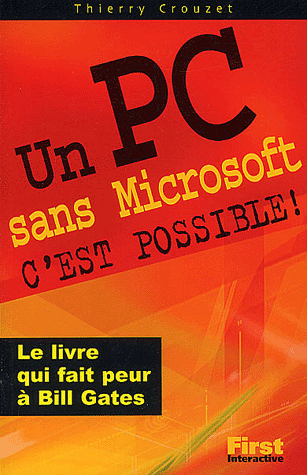

Vulgarisation 1997-2003

Meilleurs sites 2004

Octobre 2003
Editeur Fisrt Interactive
ISBN 2844274935
Meilleurs téléchargements 2004

Septembre 2003
Editeur First Interactive
ISBN 2844274943
Un PC sans Microsoft

Février 2003
Editeur : First Interactive
ISBN : 2844274137
Meilleurs téléchargements 2003

Septembre 2002
Editeur First Interactive
ISBN 2844273602
Meilleurs sites 2003

Septembre 2002
Editeur First Interactive
ISBN 2844273858
Je crée mon site Web

Mars 2002 (deuxième édition)
Editeur First Interactive
ISBN 2844272916
Je maîtrise Internet

Février 2002
Editeur First Interactive
ISBN 2844272789
Meilleurs sites 2002

Janvier 2002
Editeur First Interactive
ISBN 2-844-27993-7
Je réussis mes recherches

Février 2001
Editeur : Microsoft Press
ISBN 284082891X
Je communique sur Internet
")
Février 2001
Editeur : Microsoft Press
ISBN 2840827751
Je crée mon site Web (poche)
")
Février 2001
Editeur : Microsoft Press
ISBN 284082776X
Je prépare mes voyages

Février 2001
Editeur : Microsoft Press
ISBN 2840828804
Meilleurs sites 2001

Octobre 2000
Editeur Microsoft Press
ISBN 2840827743
Internet au quotidien

Juin 2000
Editeur : Microsoft Press
ISBD 2840825465
Meilleurs sites 2000 (poche)

Avril 2000
Editeur Microsoft Press
ISBN 2840825457
Je crée mon site

Février 2000
Editeur Microsoft Press
ISBN 2840824655
Je surfe sur Internet

Avril 2000
Editeur Microsoft Press
ISBN 2840825449
Meilleurs sites 2000

Octobre 1999
Editeur Microsoft Press
ISBN ?
Office en un clin d'œil

Juin 1999
Editeur Microsoft Press
ISBN 2840823195
Internet en un clin d'œil

Juin 1999
Editeur Microsoft Press
ISBN 2840823160
Word en un clin d'œil

Juin 1999 (deuxième édition)
Editeur Microsoft Press
ISBN 2840823179
Meilleurs sites 1999

Octobre 1998
Editeur Microsoft Press
ISBN 2840822709
Windows en un clin d'œil

Septembre 1998
Editeur Microsoft Press
ISBN 2840824620
Loisirs & Internet

Février 1998
Editeur Microsoft Press
ISBN 2840823101
Internet en un clin d'œil

Octobre 1997
Editeur Microsoft Press
ISBN 2840821168
Word en un clin d'œil

Octobre 1997
Editeur Microsoft Press
ISBN 2840821095
Sommaire | Texte publié jeudi 3 février 2011